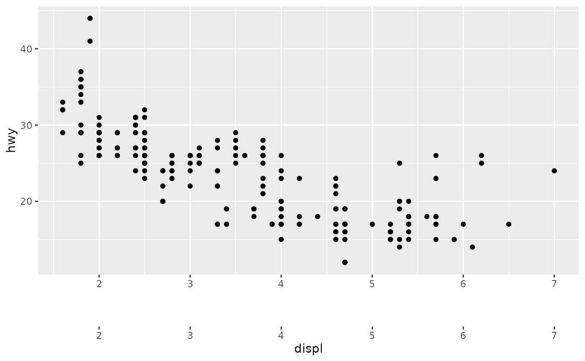

This function constructs a spacer guide primitive.
Arguments
- space
A [
<unit[1]>][grid::unit()]- title
One of the following to indicate the title of the guide:
- theme
A
<theme>object to style the guide individually or differently from the plot's theme settings. Thethemeargument in the guide overrides and is combined with the plot's theme.- position
A
<character[1]>giving the location of the guide. Can be one of"top","bottom","left"or"right".
Styling options
#' Below are the theme options that determine the styling of this guide. This guide does not have option dependent on its role as axis or legend.
legendry.guide.spacingA<unit>setting the amount of spacing when thespaceargument isNULL.
See also
Other primitives:
primitive_box(),
primitive_bracket(),
primitive_fence(),
primitive_labels(),
primitive_line(),
primitive_segments(),
primitive_ticks(),
primitive_title()
Examples
ggplot(mpg, aes(displ, hwy)) +
geom_point() +
guides(
x = guide_axis_stack("axis", primitive_spacer(unit(1, "cm")), "axis")
)
